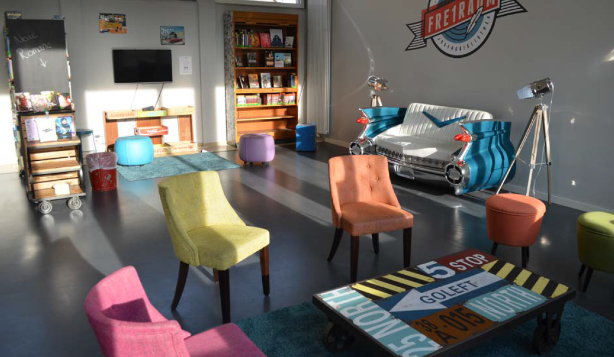

Napjaink a digitális transzformáció jegyében telnek. Ennek hatása az élet minden területén érezhető, így van ez különösen az információ-áramlás és a tanulás terén is. A megváltozott információtovábbítás- és feldolgozás módosította a tanulási szokásokat és munkaformákat. Ennek következtében olyan modern tanulási terekre van szükség, amelyek ezeket az igényeket ki tudják szolgálni. Sajnos, a hagyományos tantermek ezeknek az elvárásoknak aligha tudnak megfelelni. A felmérések ugyanakkor azt mutatják, hogy nagy szükség lenne rájuk, ugyanis adatolhatóan javult az újgenerációs tanulási terekben a tanulók teljesítménye. E szemlélet képviselői úgy gondolják, hogy minden könyvtár egyben tanulási tér is, ezért a könyvtárépület helyiségeinek megkonstruálása, berendezése, szakértői figyelmet igényel. A tanulási térdesign ezeknek az újgenerációs tanulási tereknek a rendezésével foglalkozik, ötvözve a legújabb pedagógiai, pszichológiai és technológiai újításokat, kutatási eredményeket.

Az újgenerációs tanulási terek rendezésénél kiemelt szempont a flexibilitás, a komfortosság és az esztétikum, ugyanis ezeknek motiváló és inspiráló hatása van a tanulási folyamatra.
A különböző tanulási tértípusok (amfiteátrum, tábortűz, itató, barlang, input-szoba, piactér, alkotótér) felismerése azért fontos, mert más és más munkaformákhoz, feladatokhoz alkalmasak.